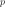
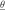

GeneralizedLinearModelAlgorithm¶
-
class
GeneralizedLinearModelAlgorithm(*args)¶ Algorithm for the evaluation of general linear models.
- Available constructors:
GeneralizedLinearModelAlgorithm(inputSample, outputSample, covarianceModel, basis, normalize=True, keepCovariance=True)
GeneralizedLinearModelAlgorithm(inputSample, inputTransformation, outputSample, covarianceModel, basis, keepCovariance=True)
GeneralizedLinearModelAlgorithm(inputSample, outputSample, covarianceModel, multivariateBasis, normalize=True, keepCovariance=True)
GeneralizedLinearModelAlgorithm(inputSample, inputTransformation, outputSample, covarianceModel, multivariateBasis, keepCovariance=True)
Parameters: inputSample, outputSample :
NumericalSampleor 2d-arrayThe samples and .
inputTransformation :
NumericalMathFunctionFunction T that helps to normalize the input sample.
If used, the meta model is built on the transformed data.
basis :
BasisFunctional basis to estimate the trend: .
If , the same basis is used for each marginal output.
multivariateBasis : collection of
BasisCollection of  functional basis: one basis for each marginal output.
If the trend is not estimated, the collection must be empty.
covarianceModel :
CovarianceModelCovariance model of the normal process.
normalize : bool, optional
Indicates whether the input sample has to be normalized.
OpenTURNS uses the transformation fixed by the User in inputTransformation or the empirical mean and variance of the input sample. Default is set in resource map key GeneralizedLinearModelAlgorithm-NormalizeData
keepCovariance : bool, optional
Indicates whether the covariance matrix has to be stored in the result structure GeneralizedLinearModelResult. Default is set in resource map key GeneralizedLinearModelAlgorithm-KeepCovariance
Notes
We suppose we have a sample where for all k, with the model.
The objective is to build a metamodel , using a generalized linear model: the sample is considered as the trace of a normal process on . The normal process is defined by:
where:
with and the trend functions.
 is a normal process of dimension p with zero mean and covariance function (see
is a normal process of dimension p with zero mean and covariance function (see CovarianceModelfor the notations).We note:
The GeneralizedLinearModelAlgorithm class estimates the coefficients by maximizing the likelihood of the model. The values of fixed by the User at the creation of the class are used as initial values for the optimization algorithm.
Note that the parameters
 are not optimized: they are fixed to the values specified by the User.
are not optimized: they are fixed to the values specified by the User.If a normalizing transformation T has been used, the meta model is built on the inputs .
Estimation of the parametersWe note:
where .
The model likelihood writes:
With the inferior triangular matrix such that , then:
(1)¶
OpenTURNS proceeds as follows:
In the particular case where , the first step introduces the additional relation . Thus, the second step is optimized with respect to the only parameter  and the optimized values write and .
Default optimizer is
TNCand can be changed thanks to the setOptimizationSolver method. User could also change the default optimization solver by setting the GeneralizedLinearModelAlgorithm-DefaultOptimizationSolver resource map key to NELDER-MEAD or LBFGS respectively for Nelder-Mead and LBFGS-B solvers.It is also possible to proceed as follows:
- ask for the log-likelihood function of the GeneralizedLinearModelAlgorithm thanks to the getObjectiveFunction() method
- optimize it with respect to the parameters and using any optimisation algorithms (that can take into account some additional constraints if needed)
- fulfill the GeneralizedLinearModelAlgorithm with the optimized value of these parameters.
With huge samples, the hierarchical matrix implementation could be used if OpenTURNS had been compiled with hmat-oss support.
This implementation, which is based on a sparse representation of an approximated covariance matrix (and its Cholesky factor), has a better complexity both in terms of memory requirements and floating point operations. To use it, the GeneralizedLinearModelAlgorithm-LinearAlgebra resource map key should be instancied to HMAT. Default value of the key is LAPACK.
A known centered gaussian observation noise can be taken into account with
setNoise():Examples
Create the model and the samples:
>>> import openturns as ot >>> f = ot.NumericalMathFunction(['x'], ['x * sin(x)']) >>> inputSample = ot.NumericalSample([[1.0], [3.0], [5.0], [6.0], [7.0], [8.0]]) >>> outputSample = f(inputSample)
Create the algorithm:
>>> basis = ot.ConstantBasisFactory().build() >>> covarianceModel = ot.SquaredExponential(1) >>> algo = ot.GeneralizedLinearModelAlgorithm(inputSample, outputSample, covarianceModel, basis) >>> algo.run()
Get the resulting meta model:
>>> result = algo.getResult() >>> metamodel = result.getMetaModel()
Methods
getClassName()Accessor to the object’s name. getDistribution()Accessor to the joint probability density function of the physical input vector. getId()Accessor to the object’s id. getInputSample()Accessor to the input sample. getInputTransformation()Get the function normalizing the input. getName()Accessor to the object’s name. getNoise()Observation noise variance accessor. getObjectiveFunction()Accessor to the log-likelihood function that writes as argument of the covariance’s model parameters. getOptimizationSolver()Accessor to solver used to optimize the covariance model parameters. getOptimizeParameters()Accessor to the covariance model parameters optimization flag. getOutputSample()Accessor to the output sample. getResult()Get the results of the metamodel computation. getShadowedId()Accessor to the object’s shadowed id. getVisibility()Accessor to the object’s visibility state. hasName()Test if the object is named. hasVisibleName()Test if the object has a distinguishable name. run()Compute the response surface. setDistribution(distribution)Accessor to the joint probability density function of the physical input vector. setInputTransformation(inputTransformation)Set the function normalizing the input. setName(name)Accessor to the object’s name. setNoise(noise)Observation noise variance accessor. setOptimizationSolver(solver)Accessor to the solver used to optimize the covariance model parameters. setOptimizeParameters(optimizeParameters)Accessor to the covariance model parameters optimization flag. setShadowedId(id)Accessor to the object’s shadowed id. setVisibility(visible)Accessor to the object’s visibility state. -
__init__(*args)¶
-
getClassName()¶ Accessor to the object’s name.
Returns: class_name : str
The object class name (object.__class__.__name__).
-
getDistribution()¶ Accessor to the joint probability density function of the physical input vector.
Returns: distribution :
DistributionJoint probability density function of the physical input vector.
-
getId()¶ Accessor to the object’s id.
Returns: id : int
Internal unique identifier.
-
getInputSample()¶ Accessor to the input sample.
Returns: inputSample :
NumericalSampleThe input sample .
-
getInputTransformation()¶ Get the function normalizing the input.
Returns: transformation :
NumericalMathFunctionFunction T that normalizes the input.
-
getName()¶ Accessor to the object’s name.
Returns: name : str
The name of the object.
-
getNoise()¶ Observation noise variance accessor.
Parameters: noise : sequence of positive float
The noise variance of each output value.
-
getObjectiveFunction()¶ Accessor to the log-likelihood function that writes as argument of the covariance’s model parameters.
Returns: logLikelihood :
NumericalMathFunctionThe log-likelihood function degined in (1) as a function of .
Notes
The log-likelihood function may be useful for some postprocessing: maximization using external optimizers for example.
Examples
Create the model and the samples:
>>> import openturns as ot >>> f = ot.NumericalMathFunction(['x0'], ['f0'], ['x0 * sin(x0)']) >>> inputSample = ot.NumericalSample([[1.0], [3.0], [5.0], [6.0], [7.0], [8.0]]) >>> outputSample = f(inputSample)
Create the algorithm:
>>> basis = ot.ConstantBasisFactory().build() >>> covarianceModel = ot.SquaredExponential(1) >>> algo = ot.GeneralizedLinearModelAlgorithm(inputSample, outputSample, covarianceModel, basis) >>> algo.run()
Get the log-likelihood function:
>>> likelihoodFunction = algo.getObjectiveFunction()
-
getOptimizationSolver()¶ Accessor to solver used to optimize the covariance model parameters.
Returns: algorithm :
OptimizationSolverSolver used to optimize the covariance model parameters. Default optimizer is
TNC
-
getOptimizeParameters()¶ Accessor to the covariance model parameters optimization flag.
Returns: optimizeParameters : bool
Whether to optimize the covariance model parameters.
-
getOutputSample()¶ Accessor to the output sample.
Returns: outputSample :
NumericalSampleThe output sample .
-
getResult()¶ Get the results of the metamodel computation.
Returns: result :
GeneralizedLinearModelResultStructure containing all the results obtained after computation and created by the method
run().
-
getShadowedId()¶ Accessor to the object’s shadowed id.
Returns: id : int
Internal unique identifier.
-
getVisibility()¶ Accessor to the object’s visibility state.
Returns: visible : bool
Visibility flag.
-
hasName()¶ Test if the object is named.
Returns: hasName : bool
True if the name is not empty.
-
hasVisibleName()¶ Test if the object has a distinguishable name.
Returns: hasVisibleName : bool
True if the name is not empty and not the default one.
-
run()¶ Compute the response surface.
Notes
It computes the response surface and creates a
GeneralizedLinearModelResultstructure containing all the results.
-
setDistribution(distribution)¶ Accessor to the joint probability density function of the physical input vector.
Parameters: distribution :
DistributionJoint probability density function of the physical input vector.
-
setInputTransformation(inputTransformation)¶ Set the function normalizing the input.
Parameters: transformation :
NumericalMathFunctionFunction that normalizes the input. The input dimension should be the same as input’s sample dimension, output dimension should be output sample’s dimension
-
setName(name)¶ Accessor to the object’s name.
Parameters: name : str
The name of the object.
-
setNoise(noise)¶ Observation noise variance accessor.
Parameters: noise : sequence of positive float
The noise variance of each output value.
-
setOptimizationSolver(solver)¶ Accessor to the solver used to optimize the covariance model parameters.
Parameters: algorithm :
OptimizationSolverSolver used to optimize the covariance model parameters.
-
setOptimizeParameters(optimizeParameters)¶ Accessor to the covariance model parameters optimization flag.
Parameters: optimizeParameters : bool
Whether to optimize the covariance model parameters.
-
setShadowedId(id)¶ Accessor to the object’s shadowed id.
Parameters: id : int
Internal unique identifier.
-
setVisibility(visible)¶ Accessor to the object’s visibility state.
Parameters: visible : bool
Visibility flag.
 ;
; .
.